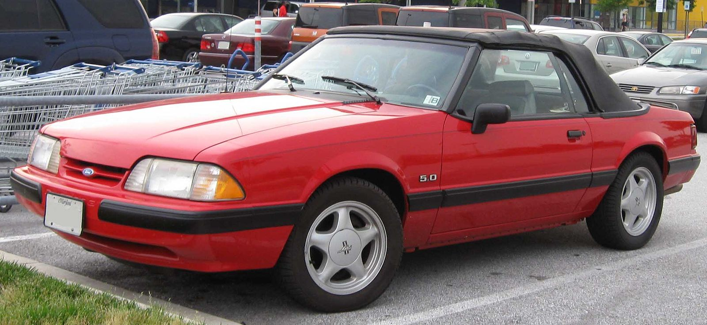

1979 год появилось новое поколение Mustang. Технической основой автомобиля стала платформа Fox Platform, на базе которой к тому времени уже были созданы компакты Ford Fairmont и Mercury Zephyr. Позднее на базе той же платформы были созданы Ford Thunderbird, Ford LTD, американский Ford Granada, и даже Lincoln Continental 1982 года, что позволило достичь высокой унификации внутри модельного ряда.
После второго нефтяного кризиса 1979 года производство двигателя «Ford Windsor 302 V8» (4,9 л) было прекращено в пользу нового «Ford Windsor 255 V8» (4,2 л), обладающему меньшим расходом топлива. Это был единственный двигатель V8, который предлагается в 1980 и 1981 годах, и самым слабым V8 (120 л. с. (89 кВт)), когда-либо ставившимся на Mustang.
Возрождение Mustang началось в 1982 году с возвращением «Ford Windsor 302 V8» (4,9 л) в версии «High Output», он развивал 157 л. с. (117 кВт) благодаря новым клапанам, новой форме камеры сгорания, большому двухкамерному карбюратору, а также улучшенным впускной и выхлопной системам. Двигатель «3.8 L Essex V6» заменил рядную шестёрку 3,3 L.
Начиная с 1990 года стала стандартной подушка безопасности водителя. Единственный жест Ford по поводу 25-й годовщины Ford Mustang’а — маленькая эмблема галопом несущейся лошади на всех моделях, построенных в период с 27 марта 1989 года и до конца модели 1990 года. В 1992 году двигатели 2.3L I4 получили пересмотренные головки цилиндров с двумя свечами зажигания на цилиндр, увеличив мощность с 88 до 105 л. с. Производство Ford Mustang’а прекратилось в 1993 году, с введением четвёртого поколения. 